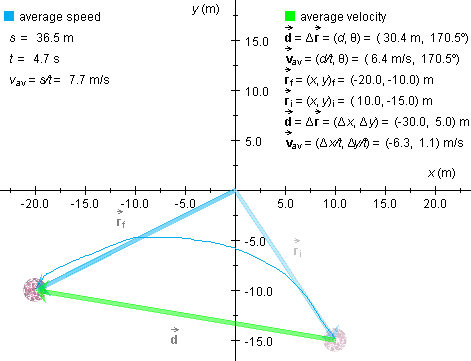
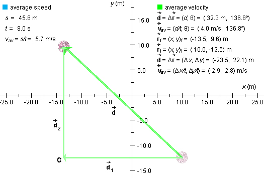

The applet determines the average velocity and average speed for a ball as
the ball is moved from one point to another.
Prerequisites
Students should understand the concepts of displacement and distance
traveled and should have a working knowledge of vectors.
Learning Outcomes
Students will develop an understanding of the physics concepts of average
velocity and average speed, will get more experience in working with vector
and scalar quantities, and will learn about averages over time.
Instructions
The applet should be open. The step-by-step instructions in this lesson
are to be carried out in the applet. You may need to toggle back and forth
between instructions and applet if your screen space is limited. You should
be prepared to do calculations to verify the numbers that are generated by
the applet.
Average velocity is a vector and therefore denoted av in
boldface with an arrow on top. Average speed is a scalar and
therefore denoted vav in plainface without an
arrow. When writing these symbols by hand, the only distinction
between them is the arrow. Make sure you use it when you mean
velocity.
We will see below that the magnitude of the average velocity
is in general not equal to the average speed. Therefore,
one must use a different notation to distinguish between the
two. The symbol |av| will be used to denote the
magnitude (absolute value) of the average velocity while
vav denotes average speed. This is an example
where the magnitude of a vector cannot be denoted by the same
symbol as the vector but without arrow.
, Δ, ||, d, and s.
Displacement is a vector quantity denoted in boldface with an arrow on
top. In this case, no confusion is possible if the magnitude of
the displacement is denoted d. However, it could also be
denoted ||.
Another notation for displacement is Δ. It reflects the fact that
displacement is the difference between (change in) two
positions. Note that the magnitude d of a displacement is
in general different from the distance s traveled. This
is the reason why the letter d is not used in MAP to
denote distance traveled.
Δt and t.
Time elapsed measures an interval of time and is therefore
properly denoted Δt, where the Delta symbol indicates a
difference: Δt = t2 - t1,
the differene between a later instant of time t2 and an
earlier instant of time t1.
E.g., the time elapsed between the two instants t1 =
10 s and t2 = 17 s is Δt =
t2 - t1 = 17 - 10 = 7 s.
The symbol t is used to denote an instant of time.
If one considers a time interval extending from t = 0 to some
later instant t of time, the time elapsed is Δt =
t - 0 = t. In such a case, t can therefore be used
to denote time elapsed. This is what is done in the applet.
Definition of average velocity and average speed.
Average velocity is defined as the ratio: displacement divided
by time elapsed. In symbols:
av =
/Δt = Δ/Δt. (1)
Note that here we are dividing a displacement, not a "change" in a
displacement, by the corresponding time elapsed. A displacement is a
change in position, but a "change in displacement" does not make any
sense here.
Average speed is defined as the ratio: distance traveled
divided by time elapsed. In symbols:
vav = s/Δt.
(2)
Again, you will find that in the applet Δt is replaced by
t in these definitions, for the reason mentioned above.
Polar vs. Cartesian
The applet gives values for vector quantities in two forms that will
be referred to as polar and Cartesian in the following.
In the polar form, a vector is specified in terms of its
magnitude and direction, the latter specified by an angle
relative to the positive x-axis in the positive
(counter-clockwise) sense.
In the Cartesian form, a vector is specified in terms of its x
and y components.
Exercise 1. With the initial position of the ball set at
(x,y)i = (10.0,-15.0) m, drag the ball to near
(x,y)f = (-20.0,-10.0) m along a curved path, as in
the snapshot in Figure 1 below. You may find it helpful to display the grid
while setting the initial position and moving the ball.
Display the initial and final position vectors, i and f, respectively, and the data. Figure 1
below is an illustration of the kind of thing you should see. The
frames around the data are omitted in Figure 1.

Figure 1
The following data are included among those in shown in Figure 1:
distance traveled: s = 36.5 m
displacement (polar form): =
(d, θ) = (30.4 m, 170.5o)
displacement (Cartesian form): =
(Δx, Δy) = (-30.0, 5.0) m
time elapsed: t = 4.7 s
Question 1. Given these data, what is the average speed?
Answer. Using Definition (2) above gives
vav = s/t = 36.5/4.7 = 7.8
m/s. (3)
This agrees, within round-off error, with the applet value displayed in
Figure 1.
Question 2. Given these data, what is the average velocity? Give the
answer in both the polar and Cartesian forms.
Answer (in polar form). Using Definition (1) above
gives
This agrees, within round-off error, with the applet value displayed in
Figure 1.
Note that to divide a vector by a scalar, one divides its magnitude by the
scalar, but does not change the angle.
Observation. The magnitude of the average velocity has
the value |av| = 6.5 m/s,
and the average speed has the value vav = 7.8
m/s. The two values are not equal! This is the reason,
pointed out at the beginning of the lesson, why the magnitude of the
average velocity cannot be denoted by the symbol
vav. Why is the average speed greater than the
magnitude of the average velocity? Could there ever be a situation
in which it is the other way around?
Answer (in Cartesian form). Again, using Definition
(1) gives
Exercise 1. Move the ball through two successive
displacements 1 and 2, as in Figure 2 below, and
determine the average speeds vav,1 and
vav,2 and average velocities and av,1 and av,2 while these displacements take
place.

Figure 2
Let the intermediate point, reached after the first displacement,
be labeled "C". See Figure 2.
Data related to the intermediate point C are not displayed by the
applet once the second displacement has been carried out. You need
to observe the time elapsed during the motion from the initial point
to point C at the end of the first displacement. For the motion
shown in Figure 2 this time elapsed is:
time elapsed from the initial
point to point C:
tC = 2.5 s. (6)
Question 1. What are the values of the average speed during the first
and second displacements for the motion in Figure 2?
Answer. The calculations are analogous to the one leading to result
(3). For the first displacement, using for the distance traveled the value
|xC - xi| = |xf -
xi| = |-13.5 - 10.0| = 23.5 m, and using value (6), we
get
vav,1 = |xC -
xi|/tC = 23.5/2.5 = 9.4 m/s. (7)
For the second displacement, using for the distance traveled the value
|yf - yC| = |yf -
yi| = |9.6 - (-12.5)| = 22.1 m, and taking for the time
elapsed t - tC = 8.0 - 2.5 = 5.5 s, we get
Question 2. What are the values of the average velocity during the
first and second displacements of the motion in Figure 2?
Answer. The calculations are based on Definition (1), and
are analogous to calculation (5). It is an exercise for you to
verify that the answers, in (x,y)-components, are
av,1 = (-9.4, 0)
m/s (9)
and
av,2 = (0, 4.0) m/s (10)
Exercise 2. Determine the average speed
vav and average velocity av for the entire movement created by you,
combining both individual displacements.
Question 3. What is the average speed for the entire movement,
combining both individual displacements, for the motion in Figure 2?
Answer. It may be tempting to work out the answer by taking the
arithmetic mean of the two individual average speeds (7) and (8). This would
give the value
(vav,1 +
vav,2) = (9.4 + 4.0)/2 = 6.7 m/s. (11)
However, this value is incorrect because average speed is
not defined as a mean of two average speeds over shorter time
intervals. The correct value as shown in Figure 2 is
vav = 5.7 m/s. (12)
To obtain value (12), use Definition (2) for the average speed. The total
distance traveled is s = |xC - xi|
+ |yf - yC| = 23.5 + 22.1 = 45.6 m.
Dividing this by the total time elapsed, 8.0 s, gives result (12).
Question 4. What is the average velocity for the entire
movement, combining both the first and second displacements, for the
motion in Figure 2?
Answer. Again, the correct answer is not equal to the mean
of the two values (9) and (10). Work out this mean, and verify
that it is not equal to the correct value for the average velocity
av =
(-2.9, 2.8) m/s, shown in Figure 2.
Verify that this latter value is correct by using Definition (1),
i.e., by dividing the total displacement, = (-23.5, 22.1) m, by the total time
elapsed, t = 8.0 s.
 av,
vav, and |
av,
vav, and | , Δ
, Δ , |
, |